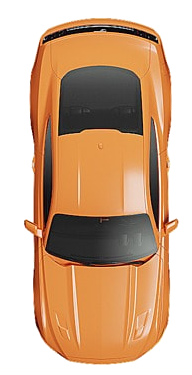

<div class="border-b border-gray-200 dark:border-gray-700">
    <nav class="flex space-x-2" aria-label="Tabs" role="tablist">
        <button type="button"
            class="hs-tab-active:font-semibold hs-tab-active:border-blue-600 hs-tab-active:text-blue-600 py-4 px-1 inline-flex items-center gap-x-2 border-b-2 border-transparent text-sm whitespace-nowrap text-gray-500 hover:text-blue-600 focus:outline-none focus:text-blue-600 disabled:opacity-50 disabled:pointer-events-none dark:text-gray-400 dark:hover:text-blue-500 active"
            id="tabs-with-icons-item-1" data-hs-tab="#tabs-with-icons-1" aria-controls="tabs-with-icons-1" role="tab">
            <svg xmlns="http://www.w3.org/2000/svg" fill="none" viewBox="0 0 24 24" stroke-width="1.5"
                stroke="currentColor" class="w-6 h-6">
                <path stroke-linecap="round" stroke-linejoin="round"
                    d="M8.25 18.75a1.5 1.5 0 01-3 0m3 0a1.5 1.5 0 00-3 0m3 0h6m-9 0H3.375a1.125 1.125 0 01-1.125-1.125V14.25m17.25 4.5a1.5 1.5 0 01-3 0m3 0a1.5 1.5 0 00-3 0m3 0h1.125c.621 0 1.129-.504 1.09-1.124a17.902 17.902 0 00-3.213-9.193 2.056 2.056 0 00-1.58-.86H14.25M16.5 18.75h-2.25m0-11.177v-.958c0-.568-.422-1.048-.987-1.106a48.554 48.554 0 00-10.026 0 1.106 1.106 0 00-.987 1.106v7.635m12-6.677v6.677m0 4.5v-4.5m0 0h-12" />
            </svg>
            Units
        </button>
        <button type="button"
            class="hs-tab-active:font-semibold hs-tab-active:border-blue-600 hs-tab-active:text-blue-600 py-4 px-1 inline-flex items-center gap-x-2 border-b-2 border-transparent text-sm whitespace-nowrap text-gray-500 hover:text-blue-600 focus:outline-none focus:text-blue-600 disabled:opacity-50 disabled:pointer-events-none dark:text-gray-400 dark:hover:text-blue-500"
            id="tabs-with-icons-item-2" data-hs-tab="#tabs-with-icons-2" aria-controls="tabs-with-icons-2" role="tab">
            <svg xmlns="http://www.w3.org/2000/svg" fill="none" viewBox="0 0 24 24" stroke-width="1.5"
                stroke="currentColor" class="w-6 h-6">
                <path stroke-linecap="round" stroke-linejoin="round"
                    d="M17.593 3.322c1.1.128 1.907 1.077 1.907 2.185V21L12 17.25 4.5 21V5.507c0-1.108.806-2.057 1.907-2.185a48.507 48.507 0 0111.186 0z" />
            </svg>
            Unit Tags
        </button>
        <button type="button"
            class="hs-tab-active:font-semibold hs-tab-active:border-blue-600 hs-tab-active:text-blue-600 py-4 px-1 inline-flex items-center gap-x-2 border-b-2 border-transparent text-sm whitespace-nowrap text-gray-500 hover:text-blue-600 focus:outline-none focus:text-blue-600 disabled:opacity-50 disabled:pointer-events-none dark:text-gray-400 dark:hover:text-blue-500"
            id="tabs-with-icons-item-3" data-hs-tab="#tabs-with-icons-3" aria-controls="tabs-with-icons-3" role="tab">
            <svg xmlns="http://www.w3.org/2000/svg" fill="none" viewBox="0 0 24 24" stroke-width="1.5"
                stroke="currentColor" class="w-6 h-6">
                <path stroke-linecap="round" stroke-linejoin="round"
                    d="M6.827 6.175A2.31 2.31 0 015.186 7.23c-.38.054-.757.112-1.134.175C2.999 7.58 2.25 8.507 2.25 9.574V18a2.25 2.25 0 002.25 2.25h15A2.25 2.25 0 0021.75 18V9.574c0-1.067-.75-1.994-1.802-2.169a47.865 47.865 0 00-1.134-.175 2.31 2.31 0 01-1.64-1.055l-.822-1.316a2.192 2.192 0 00-1.736-1.039 48.774 48.774 0 00-5.232 0 2.192 2.192 0 00-1.736 1.039l-.821 1.316z" />
                <path stroke-linecap="round" stroke-linejoin="round"
                    d="M16.5 12.75a4.5 4.5 0 11-9 0 4.5 4.5 0 019 0zM18.75 10.5h.008v.008h-.008V10.5z" />
            </svg>
            Camera Manegment
        </button>
    </nav>
</div>

<div class="mt-3">
    <div id="tabs-with-icons-1" role="tabpanel" aria-labelledby="tabs-with-icons-item-1">
        <div class="flex justify-between px-3">
            <div class="basis-1/6">
                <div class="relative px-2 self-center w-full">
                    <input type="text" id="search" name="search"
                        class="py-3 px-4 ps-11 block border-gray-200 shadow-lg rounded-lg text-sm focus:z-10 focus:border-blue-500 focus:ring-blue-500 disabled:opacity-50 disabled:pointer-events-none dark:bg-slate-900 dark:border-gray-700 dark:text-gray-400 dark:focus:ring-gray-600"
                        placeholder="search">
                    <div class="absolute inset-y-0 start-0 flex items-center pointer-events-none z-20 ps-4">
                        <svg xmlns="http://www.w3.org/2000/svg" fill="none" viewBox="0 0 24 24" stroke-width="1.5"
                            stroke="currentColor" class="flex-shrink-0 h-4 w-4 text-gray-400 dark:text-gray-600">
                            <path stroke-linecap="round" stroke-linejoin="round"
                                d="M21 21l-5.197-5.197m0 0A7.5 7.5 0 105.196 5.196a7.5 7.5 0 0010.607 10.607z" />
                        </svg>
                    </div>
                </div>
            </div>
            <div class="flex gap-x-2">
                <button type="submit"
                    class="block shadow-sm rounded-md bg-orange-600 px-3 border-current inline-flex items-center py-2 text-sm font-semibold text-white shadow-sm hover:bg-orange-500 focus-visible:outline focus-visible:outline-2 focus-visible:outline-offset-2">
                    <svg xmlns="http://www.w3.org/2000/svg" fill="none" viewBox="0 0 24 24" stroke-width="1.5"
                        stroke="currentColor" class="w-6 h-6">
                        <path stroke-linecap="round" stroke-linejoin="round" d="M12 6v12m6-6H6" />
                    </svg>Add Unit
                </button>
                <button type="submit"
                class="bg-white hover:bg-gray-100 text-gray-800 font-semibold py-2 px-4 border border-gray-400 rounded shadow">
                <svg xmlns="http://www.w3.org/2000/svg" fill="none" viewBox="0 0 24 24" stroke-width="1.5" stroke="currentColor" class="w-6 h-6">
                    <path stroke-linecap="round" stroke-linejoin="round" d="M3.375 19.5h17.25m-17.25 0a1.125 1.125 0 01-1.125-1.125M3.375 19.5h7.5c.621 0 1.125-.504 1.125-1.125m-9.75 0V5.625m0 12.75v-1.5c0-.621.504-1.125 1.125-1.125m18.375 2.625V5.625m0 12.75c0 .621-.504 1.125-1.125 1.125m1.125-1.125v-1.5c0-.621-.504-1.125-1.125-1.125m0 3.75h-7.5A1.125 1.125 0 0112 18.375m9.75-12.75c0-.621-.504-1.125-1.125-1.125H3.375c-.621 0-1.125.504-1.125 1.125m19.5 0v1.5c0 .621-.504 1.125-1.125 1.125M2.25 5.625v1.5c0 .621.504 1.125 1.125 1.125m0 0h17.25m-17.25 0h7.5c.621 0 1.125.504 1.125 1.125M3.375 8.25c-.621 0-1.125.504-1.125 1.125v1.5c0 .621.504 1.125 1.125 1.125m17.25-3.75h-7.5c-.621 0-1.125.504-1.125 1.125m8.625-1.125c.621 0 1.125.504 1.125 1.125v1.5c0 .621-.504 1.125-1.125 1.125m-17.25 0h7.5m-7.5 0c-.621 0-1.125.504-1.125 1.125v1.5c0 .621.504 1.125 1.125 1.125M12 10.875v-1.5m0 1.5c0 .621-.504 1.125-1.125 1.125M12 10.875c0 .621.504 1.125 1.125 1.125m-2.25 0c.621 0 1.125.504 1.125 1.125M13.125 12h7.5m-7.5 0c-.621 0-1.125.504-1.125 1.125M20.625 12c.621 0 1.125.504 1.125 1.125v1.5c0 .621-.504 1.125-1.125 1.125m-17.25 0h7.5M12 14.625v-1.5m0 1.5c0 .621-.504 1.125-1.125 1.125M12 14.625c0 .621.504 1.125 1.125 1.125m-2.25 0c.621 0 1.125.504 1.125 1.125m0 1.5v-1.5m0 0c0-.621.504-1.125 1.125-1.125m0 0h7.5" />
                  </svg>
                  
            </button>
            </div>
        </div>
        <table class="min-w-full divide-y divide-gray-300">
            <thead>
                <tr>
                    <th class="p-4">
                        <div class="flex items-center">
                            <input id="checkbox-all-search" type="checkbox"
                                class="w-4 h-4 text-blue-600 bg-gray-100 border-gray-300 rounded focus:ring-blue-500 dark:focus:ring-blue-600 dark:ring-offset-gray-800 dark:focus:ring-offset-gray-800 focus:ring-2 dark:bg-gray-700 dark:border-gray-600">
                        </div>
                    </th>
                    <th>Unit Icon</th>
                    <th>Unit Title</th>
                    <th>Conected Status</th>
                    <th>IMEI</th>
                    <th>Tags</th>
                    <th>Last time point</th>
                    <th></th>
                </tr>
            </thead>
            <tbody class="divide-y divide-gray-200">
                <tr class="text-center">
                    <td class="p-4">
                        <div class="flex items-center">
                            <input id="checkbox-table-search-1" type="checkbox"
                                class="w-4 h-4 text-blue-600 bg-gray-100 border-gray-300 rounded focus:ring-blue-500 dark:focus:ring-blue-600 dark:ring-offset-gray-800 dark:focus:ring-offset-gray-800 focus:ring-2 dark:bg-gray-700 dark:border-gray-600">
                        </div>
                    </td>
                    <td class="flex justify-center">
                        
                    </td>
                    <td>Unit 02</td>
                    <td>
                        <span
                            class="py-1 px-2 inline-flex items-center gap-x-1 text-xs font-medium bg-teal-100 text-inherit rounded dark:bg-teal-500/10 dark:text-teal-500">
                            Connected
                        </span>
                    </td>
                    <td>
                        123456789123456789
                    </td>
                    <td>
                        <span
                            class="py-1 px-2 inline-flex items-center gap-x-1 text-xs font-medium bg-teal-100 text-teal-800 rounded-full dark:bg-teal-500/10 dark:text-teal-500">
                            Service
                        </span>
                    </td>
                    <td>
                        15 m ago
                    </td>
                    <td class="py-4 pl-3 pr-4 text-right text-sm font-medium sm:pr-6">
                        <div class="inline-block text-left" x-data="{ menu: false }">
                            <button x-on:click="menu = ! menu" type="button"
                                class="flex items-center text-gray-400 hover:text-gray-600 focus:outline-none"
                                id="menu-button" aria-expanded="true" aria-haspopup="true">
                                <span class="sr-only"></span>
                                <svg class="h-5 w-5" xmlns="http://www.w3.org/2000/svg" viewBox="0 0 20 20"
                                    fill="currentColor" aria-hidden="true">
                                    <path
                                        d="M10 6a2 2 0 110-4 2 2 0 010 4zM10 12a2 2 0 110-4 2 2 0 010 4zM10 18a2 2 0 110-4 2 2 0 010 4z" />
                                </svg>
                            </button>
                        </div>
                    </td>
                </tr>
            </tbody>
        </table>
        <div class="flex items-center justify-between border-t border-gray-200 bg-white px-4 py-3 sm:px-6">
            <div class="flex flex-1 justify-between sm:hidden">
                <a href="#"
                    class="relative inline-flex items-center rounded-md border border-gray-300 bg-white px-4 py-2 text-sm font-medium text-gray-700 hover:bg-gray-50">Previous</a>
                <a href="#"
                    class="relative ml-3 inline-flex items-center rounded-md border border-gray-300 bg-white px-4 py-2 text-sm font-medium text-gray-700 hover:bg-gray-50">Next</a>
            </div>
            <div class="hidden sm:flex sm:flex-1 sm:items-center sm:justify-start">
                <div>
                    <p class="text-sm text-gray-700">
                        Page
                        <span class="font-medium">1</span>
                        to
                        <span class="font-medium">2</span>
                    </p>
                </div>
                <div>
                    <nav class="isolate inline-flex -space-x-px rounded-md shadow-sm mx-2" aria-label="Pagination">
                        <a href="#"
                            class="relative inline-flex items-center rounded-l-md px-2 py-2 text-gray-400 ring-1 ring-inset ring-gray-300 hover:bg-gray-50 focus:z-20 focus:outline-offset-0">
                            <span class="sr-only">Previous</span>
                            <svg class="h-3 w-3" viewBox="0 0 20 20" fill="currentColor" aria-hidden="true">
                                <path fill-rule="evenodd"
                                    d="M12.79 5.23a.75.75 0 01-.02 1.06L8.832 10l3.938 3.71a.75.75 0 11-1.04 1.08l-4.5-4.25a.75.75 0 010-1.08l4.5-4.25a.75.75 0 011.06.02z"
                                    clip-rule="evenodd" />
                            </svg>
                        </a>
                        <a href="#"
                            class="relative inline-flex items-center rounded-r-md px-2 py-2 text-gray-400 ring-1 ring-inset ring-gray-300 hover:bg-gray-50 focus:z-20 focus:outline-offset-0">
                            <span class="sr-only">Next</span>
                            <svg class="h-3 w-3" viewBox="0 0 20 20" fill="currentColor" aria-hidden="true">
                                <path fill-rule="evenodd"
                                    d="M7.21 14.77a.75.75 0 01.02-1.06L11.168 10 7.23 6.29a.75.75 0 111.04-1.08l4.5 4.25a.75.75 0 010 1.08l-4.5 4.25a.75.75 0 01-1.06-.02z"
                                    clip-rule="evenodd" />
                            </svg>
                        </a>
                    </nav>
                </div>
            </div>
        </div>
    </div>
    <div id="tabs-with-icons-2" class="hidden" role="tabpanel" aria-labelledby="tabs-with-icons-item-2">
    </div>
    <div id="tabs-with-icons-3" class="hidden" role="tabpanel" aria-labelledby="tabs-with-icons-item-3">
    </div>
</div>